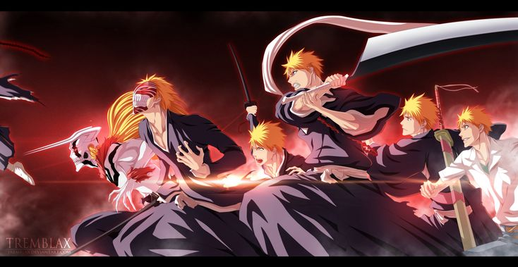
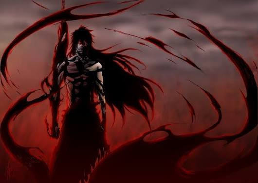
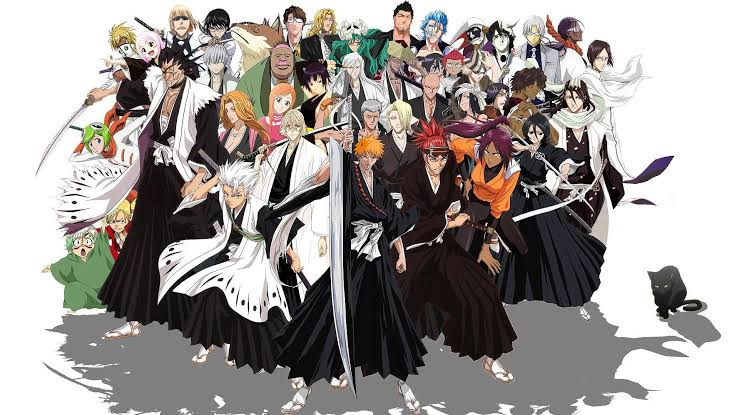
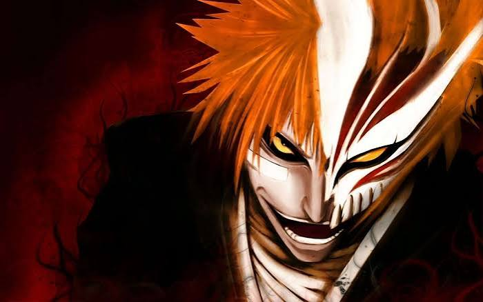
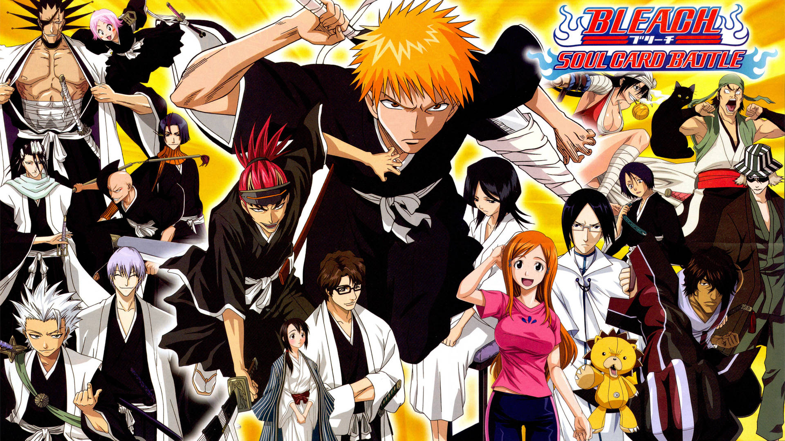

Pagína de Animes

Bleach
Ichigo Kurosaki é um estudante de 15 anos que tem uma estranha capacidade de ver, tocar e falar com espíritos. Numa noite, Ichigo encontra uma shinigami — personificação japonesa do deus da morte que tem como objetivo purificar entidades malignas— chamada Rukia Kuchiki, e esta surpreende-se por ele a conseguir ver. A conversa entre os dois acaba sendo interrompida pela aparição de um Hollow, entidade espiritual maligna. Rukia é gravemente ferida ao tentar proteger Ichigo, e então, como último recurso, decide transferir parte dos seus poderes espirituais para o jovem, para que este seja capaz de enfrentar o Hollow. Porém nem tudo sai como ela esperava, pois Ichigo absorve na sua totalidade os poderes da Rukia devido ao seu elevado poder espiritual, e derrota com facilidade o espírito maligno. No dia seguinte, Rukia aparece na escola de Ichigo, como uma humana de aparência normal, usando um gigai (material que permite os espíritos poderem conviver no mundo humano sendo vistos e podendo tocar objetos). Rukia então, ao ver que Ichigo é um bom rapaz, decide explicar tudo pra ele, o que ela era, sua principal missão (purificar Hollows) etc, e explica que devido ao fato de Ichigo ter absorvido todos os seus poderes, ela não poderia voltar ao mundo pós-morte (Soul Society ou Sociedade das Almas em português), local onde as almas dos humanos e Hollows vão quando morrem, e é neste local onde fica o Gotei 13, ou os 13 esquadrões de guardas da corte, organização onde vivem os Shinigamis, responsáveis por guiar as almas dos humanos e Hollows neste local, por purificar Hollows e manter o equilíbrio entre o mundo espiritual e o humano. Isso até ela recuperar totalmente sua força de shinigami. Meses depois, os membros da Soul Society são informados que Rukia havia entregado seus poderes de Shinigami a um humano, um fato devidamente proibido. Com isso, eles enviam shinigamis de alta patente para prendê-la e julgá-la posteriormente pelos atos cometidos. Ichigo não consegue evitar a captura de Rukia, mas junto de seus amigos da escola que após uma série de eventos passam a também possuir poderes espirituais, chamados Orihime, Sado e Uryuu (que na verdade é um Quincy, uma raça humana com poder espiritual que tem uma rixa com Shinigamis e que mata os Hollows, causando desequilíbrio nos mundos), decide sob a orientação de Yoruichi Shihōin, ser enviado à Soul Society com ajuda de Kisuke Urahara -ambos ex-shinigamis, com este último se tornando mestre de Ichigo- para resgatar Rukia. Lá, Ichigo e os outros lutam contra a elite militar de shinigamis (o Gotei 13) com o auxílio de novos aliados e finalmente depois de muito esforço, conseguem impedir a execução de Rukia.
Galeria de fotos



